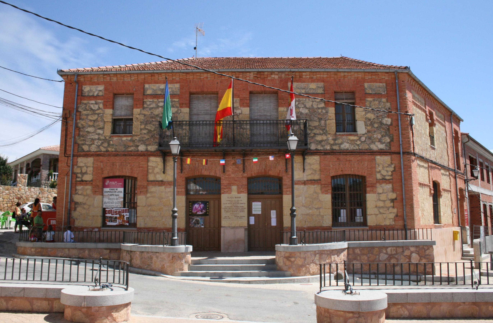

Repara Tu Patinete
Lechuga
- La lechuga puede sembrarse todo el año en semillero; trasplanta entre tres semanas y un mes, con primera cosecha al mes y medio o dos meses. — fuente: verdecora.es (2025-01-17).
Espinaca
- La espinaca se siembra directamente entre febrero-marzo o septiembre-octubre, tolera sombra ligera y da cosecha entre uno y dos meses después. — fuente: verdecora.es (2025-01-17).
Tomate
- El tomate se inicia en semillero entre febrero y marzo y se trasplanta en abril o mayo a un lugar con mucho sol. — fuente: verdecora.es (2025-01-17).
Zanahoria
- La zanahoria exige profundidad de mesa de huerto; si no la hay, deben usarse variedades enanas. — fuente: verdecora.es (2025-01-17).
Cebolla
- La cebolla se siembra entre enero-febrero o septiembre-octubre y necesita entre cuatro y seis meses hasta cosecha. — fuente: verdecora.es (2025-01-17).
Pepino
- El pepino tiene crecimiento trepador ideal para poco espacio horizontal, se siembra abril-mayo y exige agua y entutorado. — fuente: verdecora.es (2025-01-17).
Recoleccion junio
- En junio se recogen los últimos cultivos de primavera (espinacas, acelgas, cebollas) mientras calabacines y pepinos ya están en producción. — fuente: www.totenu.com.
Riego verano
- En verano se recomienda regar en las horas de más calor dirigiendo el agua a las raíces, evitando el exceso porque las hortalizas pierden sabor con riego excesivo. — fuente: www.totenu.com.
Malas hierbas
- Las malas hierbas deben eliminarse antes de que produzcan semillas porque compiten por nutrientes y humedad. — fuente: www.totenu.com.
Fuentes verificadas
- https://verdecora.es/blog/huerto-urbano-que-plantar-calendario
- https://www.totenu.com/calendario-de-junio/
Huecos declarados: volumen de búsqueda y competencia cuantitativa son UNVERIFIED (requieren Google Trends / Search Console).